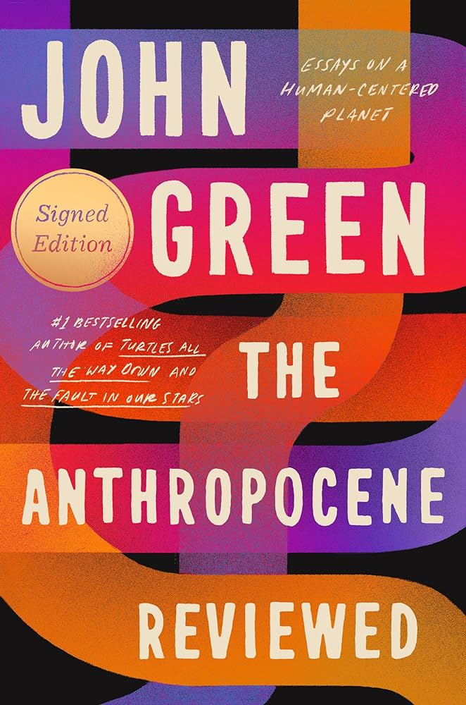

<style>
  main {
    height: 100%;
    display: flex;
    gap: 32px 0;
    flex-direction: column;

    @media (min-width: 1100px) {
      flex-direction: row;
    }
  }

  .image-wrapper,
  .reviews {
    flex: 1;
  }

  .image-wrapper {
    max-height: 200px;
    margin: 0 64px;

    @media (min-width: 1100px) {
      max-height: 900px;
    }
  }

  .reviews {
    text-align: center;
    min-width: 300px;
    flex: 1;
  }

  .average-rating {
    font-size: 1.25rem;
    margin-top: 32px;
    color: gold;
    font-style: italic;
  }

  body {
    margin: 0;
    padding: 0;
    color: white;
    background-color: hsl(260deg 75% 7%);
  }

  .book-img {
    transform: rotateZ(-20deg);
    filter: drop-shadow(-8px 32px 10px hsl(260deg 50% 4% / 0.5));
    height: 100%;
    width: 100%;
    object-fit: contain;
  }
</style>

<main>
  <div class="image-wrapper">
    
  </div>
  <div class="reviews">
    <blockquote class="review">
      Masterful. The Anthropocene Reviewed is a beautiful, timely book about the
      human condition—and a timeless reminder to pay attention to your
      attention.
      <footer>
        <cite class="author"
          >Adam Grant, #1 bestselling author of Think Again and host of the
          podcast Re:Thinking</cite
        >
      </footer>
    </blockquote>
    <blockquote class="review">
      Gloriously personal and life-affirming. The perfect book for right now.
      <footer>
        <cite class="author">People</cite>
      </footer>
    </blockquote>
    <blockquote class="review">
      John Green's unique approach to reviewing aspects of the Anthropocene,
      from air conditioning to the Taco Bell breakfast menu, is both
      thought-provoking and entertaining. His ability to find beauty and meaning
      in the mundane is truly inspiring.
      <footer>
        <cite class="author">ChatGPT</cite>
      </footer>
    </blockquote>
    <blockquote class="review">
      The Anthropocene Reviewed offers a poignant exploration of the
      complexities of human existence in an age defined by our impact on the
      planet. Green's poignant reflections remind us of the fragility and
      resilience of life on Earth.
      <footer>
        <cite class="author">ChatGPT</cite>
      </footer>
    </blockquote>
    <blockquote class="review">
      In his signature style, John Green skillfully weaves together personal
      narrative and cultural critique to examine the Anthropocene with humor and
      compassion. Each review feels like a conversation with a wise and witty
      friend.
      <footer>
        <cite class="author">ChatGPT</cite>
      </footer>
    </blockquote>
    <blockquote class="review">
      Green's exploration of the Anthropocene is a testament to the power of
      storytelling. His essays are poignant reminders of our interconnectedness
      with the natural world and the urgent need for collective action to
      address climate change.
      <footer>
        <cite class="author">ChatGPT</cite>
      </footer>
    </blockquote>
    <blockquote class="review">
      With his trademark wit and wisdom, John Green invites readers on a journey
      through the Anthropocene, exploring the profound ways in which humans have
      shaped the planet. Equal parts insightful and entertaining, this book is a
      triumph.
      <footer>
        <cite class="author">ChatGPT</cite>
      </footer>
    </blockquote>
    <div class="average-rating">
      ★★★★★
      <br />
      Marco Beduschi's Rating
    </div>
  </div>
</main>
